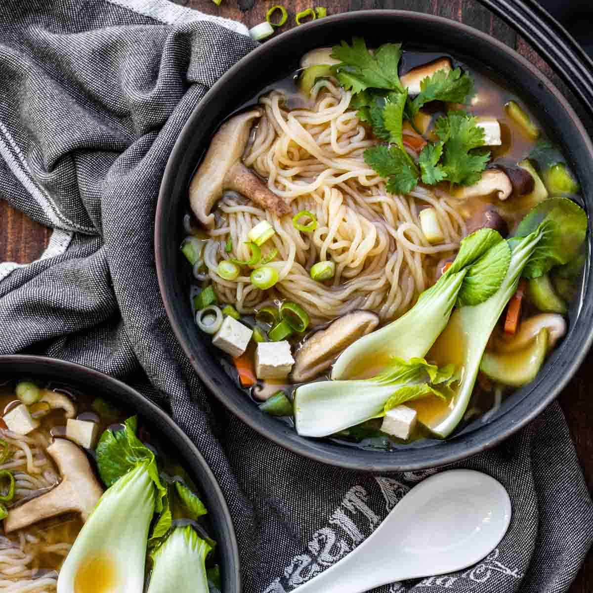

Miso Noodle Soup

Ingredients
- 12 ounces extra-firm tofu
- 1 tablespoon vegetable oil
- 1/4 cup sliced green onions
- 3 tablespoons white miso paste
- 2 cloves garlic, minced
- 1 tablespoon vegetable stock base
- 1 tablespoon grated fresh ginger
- 1 1/2 cups cooked rice vermicelli noodles
- 1 cup thinly sliced shiitake mushrooms
- 1 cup thinly sliced baby bok choy